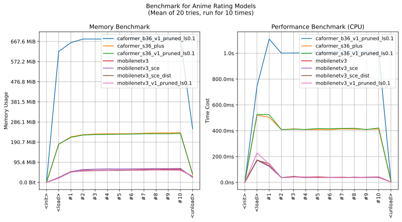

imgutils.validate.rating
- Overview:
A model for rating anime images into 3 classes (
safe,r15andr18), based on sankaku rating system.The following are sample images for testing.
The following are sample images for testing. (WARNING: NSFW!!!)

This is an overall benchmark of all the rating validation models:
The models are hosted on huggingface - deepghs/anime_rating.
Note
Please note that the classification of
safe,r15, andr18types does not have clear boundaries, making it challenging to clean the training data. As a result, there is no strict ground truth for the rating classification problem. The judgment functionality provided by the current module is intended as a quick and rough estimation.If you require an accurate filtering or judgment function specifically for R-18 images, it is recommended to consider using object detection-based methods, such as using
imgutils.detect.censor.detect_censors()to detect sensitive regions as the basis for judgment.
anime_rating_score
- imgutils.validate.rating.anime_rating_score(image: str | PathLike | bytes | bytearray | BinaryIO | Image, model_name: str = 'mobilenetv3_v1_pruned_ls0.1') Dict[str, float][source]
- Overview:
Predict the rating of the given image, return the score with as a dict object.
- Parameters:
image – Image to rating.
model_name – Model to use. Default is
mobilenetv3_sce_dist. All available models are listed on the benchmark plot above. If you need better accuracy, just set this tocaformer_s36_plus.
- Returns:
A dict with ratings and scores.
- Example::
>>> from imgutils.validate import anime_rating_score >>> >>> anime_rating_score('rating/safe/1.jpg') {'safe': 0.9999998807907104, 'r15': 2.5863172936624323e-08, 'r18': 6.480062353375615e-08} >>> anime_rating_score('rating/safe/2.jpg') {'safe': 0.9924363493919373, 'r15': 0.007255776319652796, 'r18': 0.0003077814180869609} >>> anime_rating_score('rating/safe/3.jpg') {'safe': 0.996969997882843, 'r15': 0.0030054834205657244, 'r18': 2.4601260520284995e-05} >>> anime_rating_score('rating/safe/4.jpg') {'safe': 0.9966891407966614, 'r15': 0.003293127752840519, 'r18': 1.770909148035571e-05} >>> anime_rating_score('rating/r15/5.jpg') {'safe': 0.00025384966284036636, 'r15': 0.9996721744537354, 'r18': 7.399192691082135e-05} >>> anime_rating_score('rating/r15/6.jpg') {'safe': 7.973351603141055e-05, 'r15': 0.9998563528060913, 'r18': 6.391309580067173e-05} >>> anime_rating_score('rating/r15/7.jpg') {'safe': 0.0018681309884414077, 'r15': 0.9827859997749329, 'r18': 0.015345841646194458} >>> anime_rating_score('rating/r15/8.jpg') {'safe': 0.013710384257137775, 'r15': 0.8339558839797974, 'r18': 0.15233369171619415} >>> anime_rating_score('rating/r18/9.jpg') {'safe': 3.951323833462084e-06, 'r15': 0.00029566374723799527, 'r18': 0.9997004270553589} >>> anime_rating_score('rating/r18/10.jpg') {'safe': 0.00018434497178532183, 'r15': 4.568440272123553e-05, 'r18': 0.9997699856758118} >>> anime_rating_score('rating/r18/11.jpg') {'safe': 9.11225129129889e-07, 'r15': 5.051862899563275e-05, 'r18': 0.9999485015869141} >>> anime_rating_score('rating/r18/12.jpg') {'safe': 6.902020231791539e-06, 'r15': 0.0005639699520543218, 'r18': 0.9994290471076965}
anime_rating
- imgutils.validate.rating.anime_rating(image: str | PathLike | bytes | bytearray | BinaryIO | Image, model_name: str = 'mobilenetv3_v1_pruned_ls0.1') Tuple[str, float][source]
- Overview:
Predict the rating of the given image, return the class and its score.
- Parameters:
image – Image to rating.
model_name – Model to use. Default is
mobilenetv3_sce_dist. All available models are listed on the benchmark plot above. If you need better accuracy, just set this tocaformer_s36_plus.
- Returns:
A tuple contains the rating and its score.
- Examples::
>>> from imgutils.validate import anime_rating >>> >>> anime_rating('rating/safe/1.jpg') ('safe', 0.9999998807907104) >>> anime_rating('rating/safe/2.jpg') ('safe', 0.9924363493919373) >>> anime_rating('rating/safe/3.jpg') ('safe', 0.996969997882843) >>> anime_rating('rating/safe/4.jpg') ('safe', 0.9966891407966614) >>> anime_rating('rating/r15/5.jpg') ('r15', 0.9996721744537354) >>> anime_rating('rating/r15/6.jpg') ('r15', 0.9998563528060913) >>> anime_rating('rating/r15/7.jpg') ('r15', 0.9827859997749329) >>> anime_rating('rating/r15/8.jpg') ('r15', 0.8339558839797974) >>> anime_rating('rating/r18/9.jpg') ('r18', 0.9997004270553589) >>> anime_rating('rating/r18/10.jpg') ('r18', 0.9997699856758118) >>> anime_rating('rating/r18/11.jpg') ('r18', 0.9999485015869141) >>> anime_rating('rating/r18/12.jpg') ('r18', 0.9994290471076965)